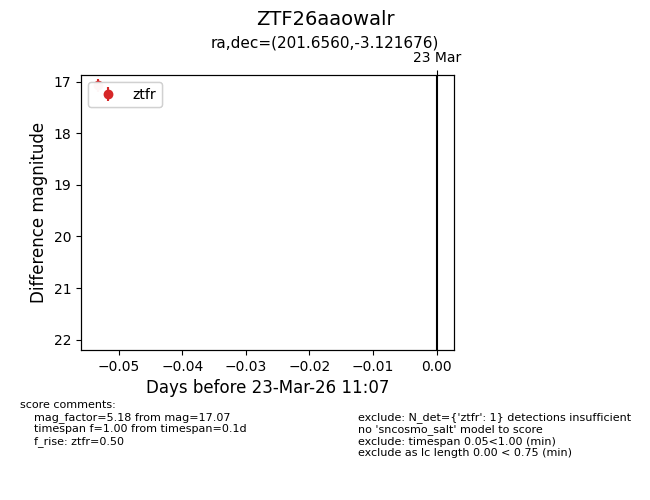
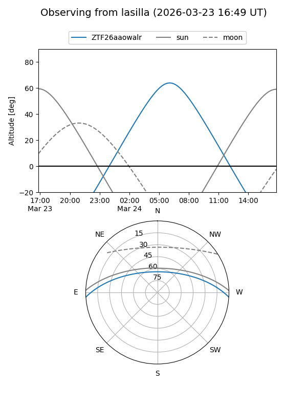
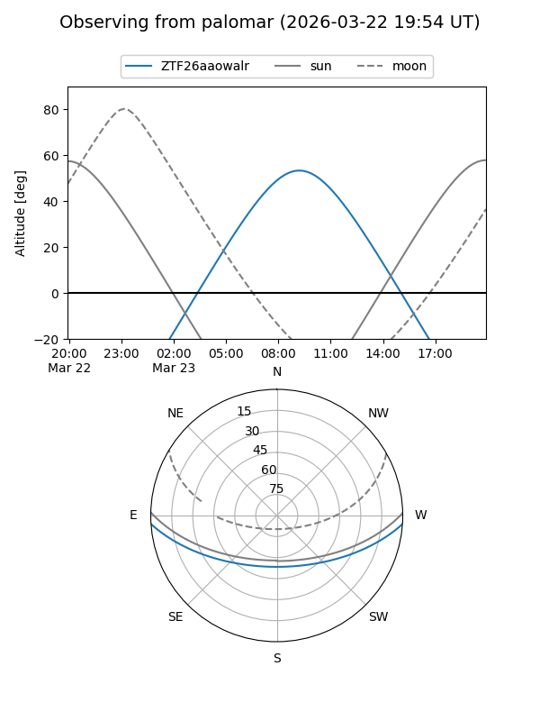

ZTF26aaowalr
Target ZTF26aaowalr at 2026-03-23 11:09
Aliases and brokers:
FINK: link
Lasair: link
ALeRCE: link
alt names
ZTF26aaowalr (ztf,fink_ztf)
Coordinates:
equatorial (ra, dec) = 201.6560,-3.12168
equatorial (HMS+DMS) = 13:26:37.45,-03:07:18.04
galactic (l, b) = (319.9653,+58.58158)
Flags:
Photometry:
last ztfr=17.07
1 ztfr detections
Lightcurve

Visibility


Additional plots